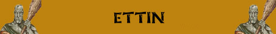

Fetore Nauseante
Doppia Testa;
Resistenza Moderata agli Incantesimi Mentali;
Robustezza Superiore

|
|
Ambiente/Habitat | Montagne o Colline |
| Frequenza | Rare | |
| Organizzazione | Solitary or Small Group | |
| Periodo di Attività | Any | |
| Dieta | Carnivore | |
| Intelligenza | Low intelligence (6) | |
| Punti Combattimento | 13 Punti Combattimento | |
| Tesoro | Regolare | |
| Allineamento Dominante | Chaotic Evil | |
| Numero di Apparizione | 1d10: (1-7) 1 (8-10) 1d2+1 | |
| Classe Armatura | 4 | |
| Movimento | 6 esagoni | |
| Dadi Vita | 9 (+9 punti ferita) | |
| Thac0 | 11 | |
| Numero di Attacchi | 2 attacchi di clava | |
| Danni | 2d6+3 (botta) / 2d6+3 (botta) | |
| Poteri Offensivi | Istinto Predatorio; Fetore Nauseante |
|
| Poteri Difensivi | Attenzione Superiore; Doppia Testa; Resistenza Moderata agli Incantesimi Mentali; Robustezza Superiore |
|
| Poteri Generici | Nessuno | |
| Vulnerabilità | Nessuna | |
| Resistenza alla Magia | Nessuna | |
| Sensi | Vista Comune, Oscurovisione | |
| Dimensioni | Huge (4,5 m. altezza) | |
| Morale | Elite (14) | |
| Valore in Punti Esperienza | 2640 |
| MODIFICATORI AI TIRI SALVEZZA | |||||||||||||||||||||||
| COR | 0 | 39 | ENV | 0 | 42 | MAG | 0 | 54 | MAL | +5 | 32 | MEN | +10 | 42 | RIF | 0 | 49 | ROB | 0 | 38 | VEL | 0 | 29 |
Descrizione
Gli Ettin sono orribili giganti alti circa 4 metri e mezzo. Costoro posseggono due teste, ognuna delle quali ha un grugno porcino con una mascella sporgente ed i canini inferiori protrusi, come le zanne di un cinghiale. Grossi denti, gialli e rovinati, escono dalle loro fauci. I loro capelli, lunghi e radi, sono sudici, come del resto appare l'intero corpo della creatura. Non lavandosi mai questi esseri emanano un fetore disgustoso ed intenso avvertibile anche a 50 metri di distanza. Un Ettin adulto può pesare approssimativamente 2 .750 kg.
Combat
Sebbene gli Ettin
non siano molto intelligenti, sono combattenti astuti . Preferiscono tendere
imboscate alle loro vittime piuttosto che caricare a testa bassa, ma una volta
ingaggiato il combattimento, un Ettin di solito lotta con ferocia fino a quando
tutti i suoi avversari non sono morti.
ISTINTO PREDATORIO
(Lesser Special
Ability):
La creatura possiede un forte
istinto predatorio, per tale motivo costei riceve un
bonus costante di +1 alla Thac0
con i suoi attacchi.
FETORE NAUSEANTE (Lesser Special Ability): L'incredibile fetore emanato costantemente dal corpo della creatura può nauseare facilmente anche i più temerari avventurieri. Per tale motivo, chi si avvicina in corpo a corpo con uno di questi esseri deve superare immediatamente un tiro salvezza su robustezza. Se il tiro salvezza riesce la creatura non subirà penalità e non dovrà effettuarne uno nuovo per 24 ore (anche qualora sia avvicini ad uno diverso di questi esseri). Se il tiro salvezza fallisce la creatura avvertirà un profondo disgusto ed otterrà una penalità di -1 ai tiri per colpire ed il 10% di perdere la concentrazione fino a che resterà in contatto (corpo a corpo) con uno qualsiasi di questi esseri. Questo effetto perdurerà per 24 ore al termine delle quali la creatura avrà diritto a superare un nuovo tiro salvezza. Al tiro salvezza non sarà applicato il modificatore dovuto alla differenza di livello tra questo essere e la creatura che gli si è avvicinata. Creature che sono indifferenti alla puzza di marciume, come gli esseri vegetali, i non morti, i costruiti, i demoni e gli elementali sono immuni agli effetti di questa abilità.
ATTENZIONE SUPERIORE (Least Special Ability): E' molto difficile sorprendere questa creatura. La stessa riceve un bonus di +2 al tiro per determinare se è stata sorpresa.
DOPPIA TESTA (Lesser Special Ability): Questa creatura, essendo dotata di due teste, ha il 50% di resistere ad ogni effetto di stordimento (stunning). Inoltre, essendo dotata di due paia di occhi, può essere accecata solo qualora entrambe le teste siano private della vista. Una magia di light, ad esempio, potrà accecare una sola delle teste della creatura.
RESISTENZA MENTALE MODERATA (Typical Ability): Questa creatura è particolarmente resistente agli effetti ed incantesimi mentali, per tale motivo la stessa riceve un bonus di +2 a tutti i tiri salvezza contro incantesimi mentali.
ROBUSTEZZA
SUPERIORE
(Typical Ability):
Il fisico della creatura è estremamente robusto. Ciò conferisce alla stessa una
robustezza superiore
che gli garantisce
9 punti ferita
supplementari.
Habitat/Society
Gli Ettin sono cacciatori malvagi e imprevedibili che possono agire in ogni momento del giorno e della notte. Data la loro ottima visione notturna, costoro non esitano ad agire di notte in zone scarsamente illuminate per godere del vantaggio contro gli esseri diurni. Le loro due teste li tengono in costante stato di allerta. Sono guardiani ed esploratori eccezionali. Questi orribili e crudeli giganti vivono mediamente intorno ai 75 anni. Gli Ettin non hanno una propria lingua ma parlano solitamente la lingua umanoide più comune dalle loro parti (solitamente la lingua degli Orchi, dei Goblin o di altri Giganti). Data la loro pronuncia assurda chi parla tale lingua deve superare una prova nella stessa per comunicare con un Ettin. Vagando da soli od in piccoli gruppi attraverso le terre di confine e le valli di montagna più remote, gli Ettin si aggirano attaccando creature di ogni genere. Costoro, infatti depredano e mangiano la carne di quasi ogni essere, ivi compresi gli esseri intelligenti e civilizzati. Non raramente, inoltre, Ettin di gruppi rivali si scontrano per questioni territoriali o semplicemente per depredare il proprio avversario.
Ecology
Gli Ettin preferiscono costruire le proprie tane in remote zone rocciose. Vivono in oscure caverne sotterranee in cui prevale il tanfo di cibo marcio ed escrementi. Tollerano le altre creature, come gli orchi, se queste possono essere in qualche modo utili. Altrimenti, gli Ettin tendono ad essere dei violenti isolazionisti ed attaccano senza esitazione tutti coloro che entrano nel loro territorio al fine di uccidere e depredare. Gli Ettin sono generalmente solitari, in rare occasioni, un Ettin particolarmente forte può radunare un piccolo gruppo di simili. Questa squadra rimane unita solo fino a quando il capo riesce a dimostrare la sua forza. Gli ettin danno poco valore alle ricchezze, ma sono abbastanza astuti per capire il valore che gli danno gli altri. Essi raccolgono tesori solo per potersi assicurare i servizi di altre creature, quasi sempre umanoidi di forza inferiore.
Mystical Resource Sourge
(Cervello) Quantità: 1, Presenza 20% - Scuola di Magia :
Divination
- Qualità
della Risorsa: Common.
Mystical Resource Sourge
(Cervello) Quantità: 1, Presenza 25%
- Effetto Particolare:
Resistenza Effetti Mentali
- Qualità della Risorsa:
Common.
Mystical Resource Sourge
(Cuore) Quantità: 1, Presenza 33% - Effetto Particolare:
Resistenza e Vigore Fisico
- Qualità della Risorsa:
Common.